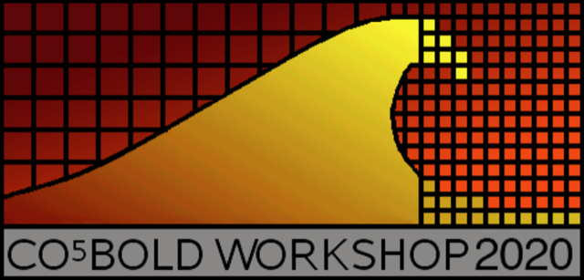
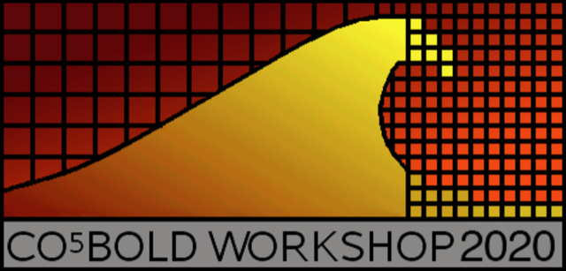

Overview
Once again, it is time to gather the developers and users of CO5BOLD for a three-day workshop in Heidelberg, Germany. In the spirit of previous workshops, the agenda is to discuss the status of the code, associated tools, their applications, lingering challenges, and ideas on how to proceed. We encourage an informal atmosphere with ample of time for discussion.
Like in 2012, the venue of the meeting will be the "Internationales Wissenschaftsforum Heidelberg" located centrally in the old part of Heidelberg - and close to the Christmas market. The IWH offers meeting rooms, as well as a number of guest rooms.
Info
- When? The workshop will take place over three days, from the 23rd - 25th November, 2020.
- Where? Internationales Wissenschaftsforum Heidelberg, Germany.
- Contributions can be viewed on Zenodo here. Please upload contributions using this link.
-
Organising Committee
- Hans G. Ludwig (hludwig@lsw.uni-heidelberg.de)
- Siddhant A. Deshmukh (sdeshmukh@lsw.uni-heidelberg.de)
Programme
Day One
- Oskar Steiner: "Acoustic-gravity wave propagation characteristics in 3D radiation hydrodynamic simulations of the solar atmosphere: A comparison of results from Bifrost, MURaM, Mancha, and CO5BOLD"
- Bernd Freytag: "New Developments in and around CO5BOLD"
- S.P. Rajaguru: "Vortices, torsional Alfven waves, and Poynting flux in the solar atmosphere — 3D MHD simulations using CO5BOLD" [focus on generation mechanisms and comparisons between different codes (MURAM, STAGGER, BIFROST and CO5BOLD)]
- G. Vigeesh: "Synthetic observations of waves in the solar atmosphere"
- Carlos Allende Prieto: "Progress on opacities and computations of spectra with tlusty/synspec/synple"
- Mia Lundkvist: "The shape of the solar granulation background seen in the power spectrum"
- Andy Gallagher: "Linfor3D: Now a multi-CPU spectrum synthesis code for CO5BOLD atmospheres"
- Roberto Cuissa: "Magnetic swirls in CO5BOLD simulations of the solar atmosphere"
- Matthias Steffen: "Radiation transport in CO5BOLD: progress and issues"
- Tim Cunningham: "Investigating convective overshoot in pure-hydrogen white dwarf atmospheres"
- Roman Brajsa: "A comparison of the calculated and measured solar radiation intensity in the mm and sub-mm wavelength ranges"
- Hans Ludwig: "The CO5BOLD legacy - my 10-years plan"
- Fabio Riva: "A MHD test suite for CO5BOLD"
Day Two
- Oskar Steiner: "Acoustic-gravity wave propagation characteristics in 3D radiation hydrodynamic simulations of the solar atmosphere: A comparison of results from Bifrost, MURaM, Mancha, and CO5BOLD"
- Bernd Freytag: "New Developments in and around CO5BOLD"
- S.P. Rajaguru: "Vortices, torsional Alfven waves, and Poynting flux in the solar atmosphere — 3D MHD simulations using CO5BOLD" [focus on generation mechanisms and comparisons between different codes (MURAM, STAGGER, BIFROST and CO5BOLD)]
- G. Vigeesh: "Synthetic observations of waves in the solar atmosphere"
- Carlos Allende Prieto: "Progress on opacities and computations of spectra with tlusty/synspec/synple"
- Mia Lundkvist: "The shape of the solar granulation background seen in the power spectrum"
- Andy Gallagher: "Linfor3D: Now a multi-CPU spectrum synthesis code for CO5BOLD atmospheres"
- Roberto Cuissa: "Magnetic swirls in CO5BOLD simulations of the solar atmosphere"
- Matthias Steffen: "Radiation transport in CO5BOLD: progress and issues"
- Tim Cunningham: "Investigating convective overshoot in pure-hydrogen white dwarf atmospheres"
- Roman Brajsa: "A comparison of the calculated and measured solar radiation intensity in the mm and sub-mm wavelength ranges"
- Hans Ludwig: "The CO5BOLD legacy - my 10-years plan"
- Fabio Riva: "A MHD test suite for CO5BOLD"
Day Three
- Oskar Steiner: "Acoustic-gravity wave propagation characteristics in 3D radiation hydrodynamic simulations of the solar atmosphere: A comparison of results from Bifrost, MURaM, Mancha, and CO5BOLD"
- Bernd Freytag: "New Developments in and around CO5BOLD"
- S.P. Rajaguru: "Vortices, torsional Alfven waves, and Poynting flux in the solar atmosphere — 3D MHD simulations using CO5BOLD" [focus on generation mechanisms and comparisons between different codes (MURAM, STAGGER, BIFROST and CO5BOLD)]
- G. Vigeesh: "Synthetic observations of waves in the solar atmosphere"
- Carlos Allende Prieto: "Progress on opacities and computations of spectra with tlusty/synspec/synple"
- Mia Lundkvist: "The shape of the solar granulation background seen in the power spectrum"
- Andy Gallagher: "Linfor3D: Now a multi-CPU spectrum synthesis code for CO5BOLD atmospheres"
- Roberto Cuissa: "Magnetic swirls in CO5BOLD simulations of the solar atmosphere"
- Matthias Steffen: "Radiation transport in CO5BOLD: progress and issues"
- Tim Cunningham: "Investigating convective overshoot in pure-hydrogen white dwarf atmospheres"
- Roman Brajsa: "A comparison of the calculated and measured solar radiation intensity in the mm and sub-mm wavelength ranges"
- Hans Ludwig: "The CO5BOLD legacy - my 10-years plan"
- Fabio Riva: "A MHD test suite for CO5BOLD"
Participants

Venue
The workshop will take place at the
"Internationales Wissenschaftsforum Heidelberg"
(english: "International Academic Forum Heidelberg")
in Heidelberg, Germany. It is located in the old part of the city of Heidelberg and nearby to the
Christmas market which takes place at the same time as the workshop.
As a research facility of Heidelberg University, the IWH is nautrally an interdisciplinary centre for
scholarly exchange in academia, and has been aplatform for multidisciplinary intellectual engagement
for over three decades. It was established in Heidelberg on the 600th anniversary of the
Ruprecht-Karls-University, and inaugurated on April 12th 1986. Since then, more than 1500 symposiums,
workshops, seminars and conferences have been convened here.
The IWH offers guest rooms, and we have acquired very limited support for accommodation. See
here for more options regarding accommodation.
Accommodation
description of the conference goes here